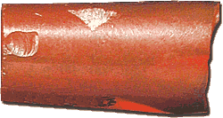

How do we know?We have no written records about how ancient craftsmen in the Indus Valley made carnelian beads. However, experimental archaeologists have tried different ways of processing stones in order to learn about how it was done. 
Archaeologists have identified bead workshops at several Indus Valley sites. These workshops can be identified by looking at debris left behind from certain processes like the chipping of the beads. Occasionally, archaeologists also find ancient tools such as hand-held bow drills and chert drills. |